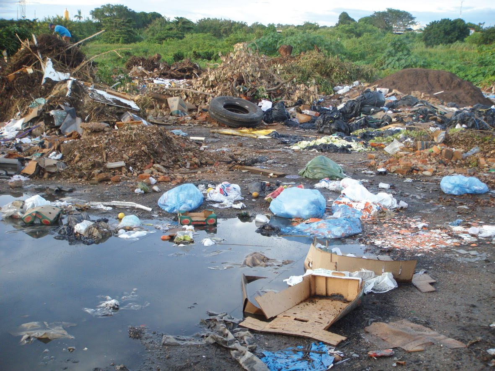

Por que Descartar Corretamente?
Evitar a contaminação do solo e da água
Reduzir a poluição do ar
Evitar riscos à saúde
Benefícios do Descarte Correto
- Preservação do meio ambiente
- Saúde
- Reciclagem e reaproveitamento
- Redução de resíduos em aterros sanitários
Evitar imagens como esta
